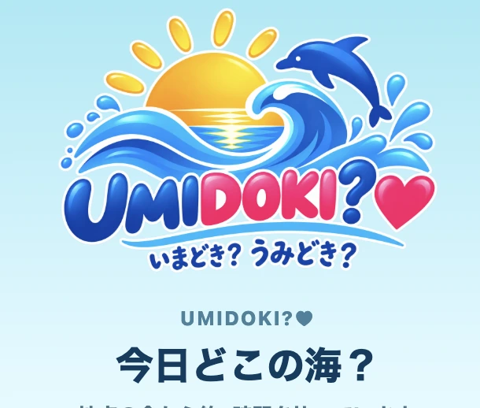
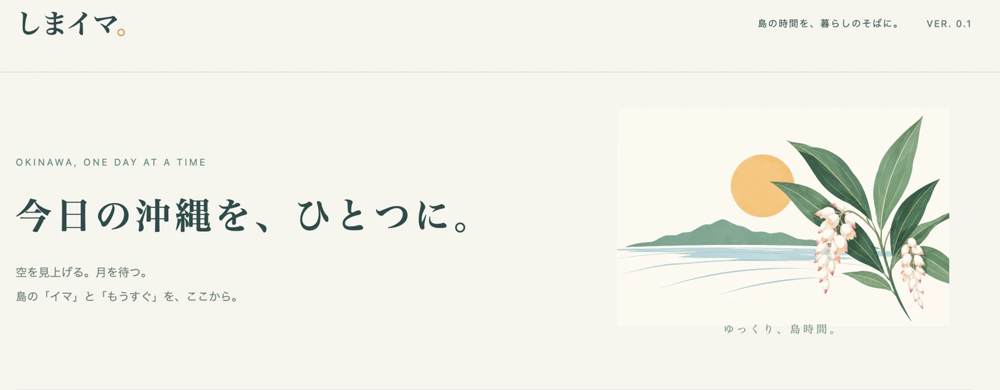
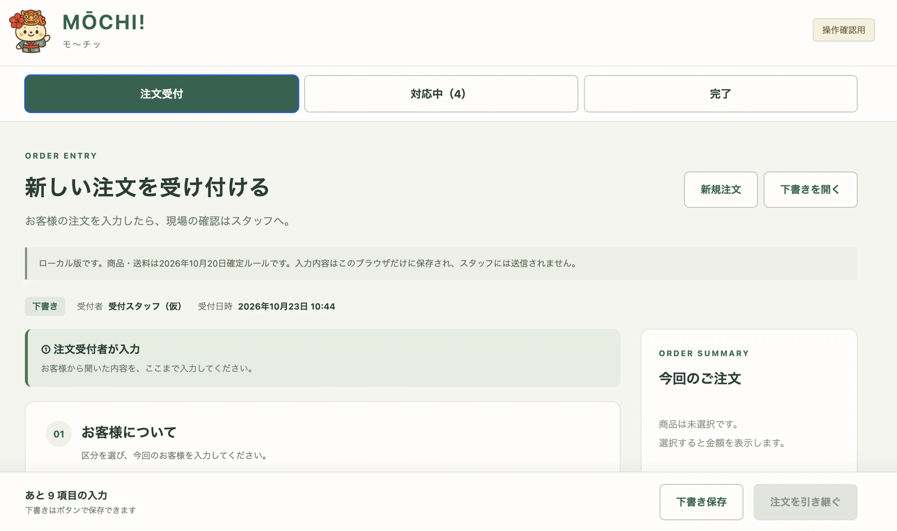
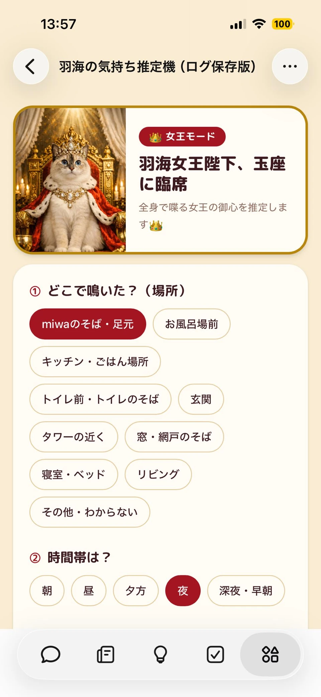
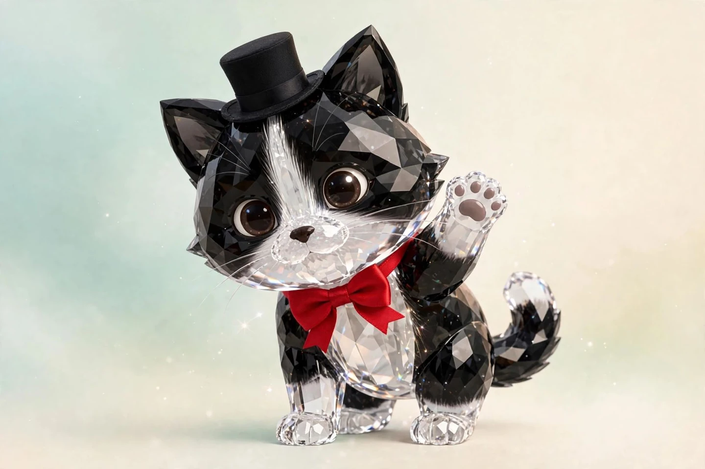

一般公開中アプリを見る
🌊 海ドキ｜UMIDOKI?♥
今日どこの海？
沖縄の海が大好きなナマケモノが作った、海遊びのお助けアプリ
天気・風・波・潮位・防災情報をまとめてチェック！
4つの海を比較して、今日の海選びをお手伝いします
海が好きだからこそ、安全第一🛟
海に行く前の情報収集を、もっとラクに🌊
海況判定は参考情報です
海に入る前には、現地での安全確認が必要です
海の音を聞きながら、
あたたかい日差しを浴びて、
風を感じながら……
今日も、ゆるっと
海と猫とAIと
思いついた「あったらいいな」を、
少しずつカタチにしています🌊
沖縄の海と猫をこよなく愛する、ナマケモノ
基本、めんどくさがり
できることなら、のんびり海を眺めていたい
でも、なぜか毎日バタバタしています🤣
そんなナマケモノがAIと出会いました
「これ、もっとラクにできない？」
「あんなアプリがあったら便利じゃない？」
思いついたら、とりあえずやってみる
気づけばアプリを作ったり、文章を書いたり、AIで遊んだり
ラクするために頑張っていたら、なんだか忙しくなりました
今日も沖縄の片隅で、ゆる〜く活動中🌊
目標は、AIに働いてもらって、自分はナマケモノらしく暮らすこと🦥💕
「あったらいいな」から生まれた、4つの作品
公開中のものも、これから育てるものも

今日どこの海？
沖縄の海が大好きなナマケモノが作った、海遊びのお助けアプリ
天気・風・波・潮位・防災情報をまとめてチェック！
4つの海を比較して、今日の海選びをお手伝いします
海が好きだからこそ、安全第一🛟
海に行く前の情報収集を、もっとラクに🌊
海況判定は参考情報です
海に入る前には、現地での安全確認が必要です

今日の沖縄を、ひとつに。
天気・太陽・月・潮・旧暦・沖縄の行事や
イベント情報をまとめて確認できるWebアプリ。
あちこち調べるのは、ちょっとめんどくさい🦥
だったら、ひとつにまとめちゃおう！
そんなナマケモノの発想から生まれた、沖縄の情報アプリ
今日の「イマ」を知って、これからの「もうすぐ」を楽しむ
沖縄の自然と暮らしを、もっと身近に🌺
ゆっくり、島時間🌿
天気・警報・台風などの情報は参考情報です。
防災判断は気象庁などの公式情報をご確認ください。
潮位は運天の推算値です。
イベントの日程・開催状況は主催者の公式案内をご確認ください。

餅屋の「めんどくさい」を、もっとラクに！
きっかけは、職場のちょっとした困りごと
注文を受けて、内容を確認して、現場に伝えて……
「これ、もっとスムーズにできない？」
そんな疑問から、AIと一緒に発注管理アプリを作り始めました
注文受付から対応中、完了まで
仕事の流れをひとつの画面で管理できる仕組みを目指しています
ラクするためなら、ナマケモノも本気出します🦥
現在はローカル版で、ログイン・スタッフ連携を調整中
実際の顧客情報や業務データは掲載しません

本日も、女王陛下のご機嫌をうかがっております
我が家には、ちょっと偉そうな猫がいます🐈
その名も羽海女王陛下👑
鳴く、見つめる、ついてくる……
「いったい何をお望みですか？」
そんな日々の疑問から生まれた、猫の気持ち推定アプリ
鳴いた場所や時間帯などを選んで、女王陛下の御心をAIと一緒に推測します
果たして、下僕は女王の気持ちを理解できるのか！？
MUSE内で制作・ログ保存版
推定結果は参考・娯楽用で、猫の気持ちを断定するものではありません
AIとの試行錯誤や、日々の気づきをnoteに
タイトルと短い紹介文を添えて、ここに並べていきます
noteのURL確認待ち
MOAIのAI勉強会で学びながら、GitHub・Codex・AIツールを使って制作しています
初心者からのスタートで、まだまだ試行錯誤中
わからないことを調べて、AIに聞いて、まずは動かしてみる
うまくいったり、やり直したり
そんな過程も含めて、少しずつ作品を育てています🦥
将来的には、海ドキと「しまイマ。」を統合して、沖縄の海・自然・イベント・地域情報をまとめて確認できるアプリへ
海遊びの日も、島の暮らしを楽しむ日も
「あちこち調べる」を、もっとラクにしたい
これは、これから育てていきたい構想です
現在の公開状況や機能は、各作品の紹介をご覧ください